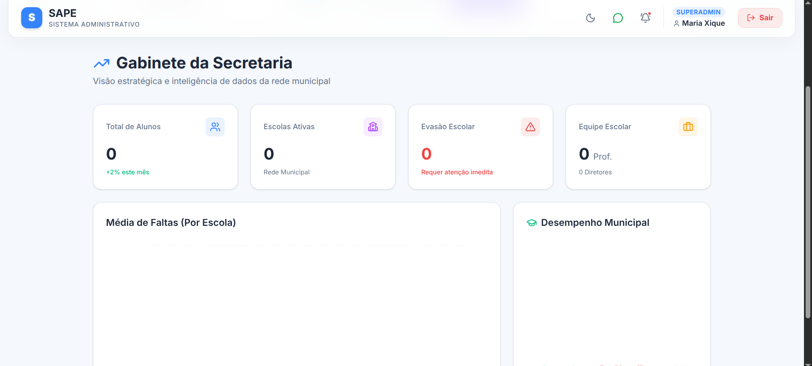
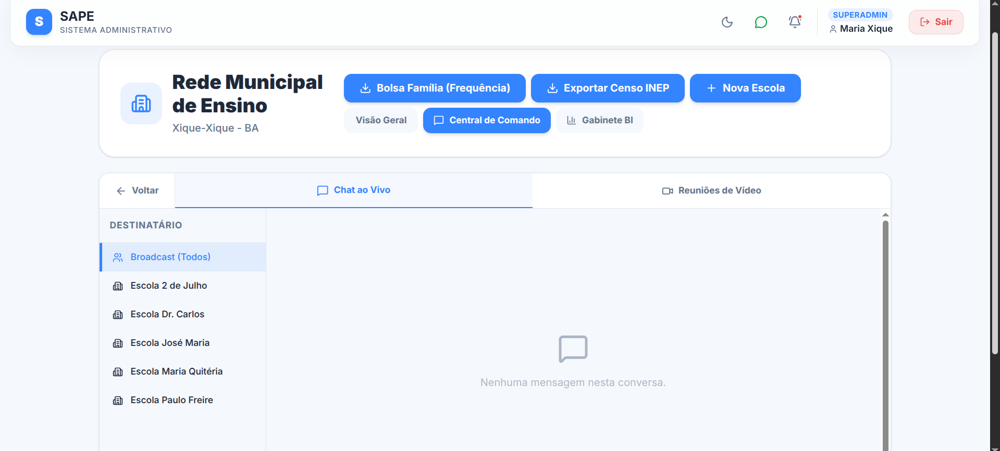
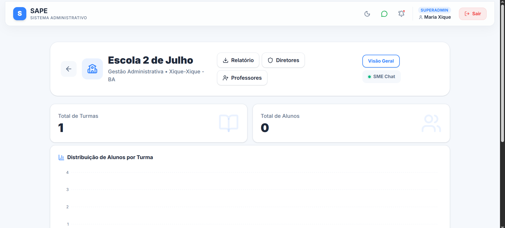
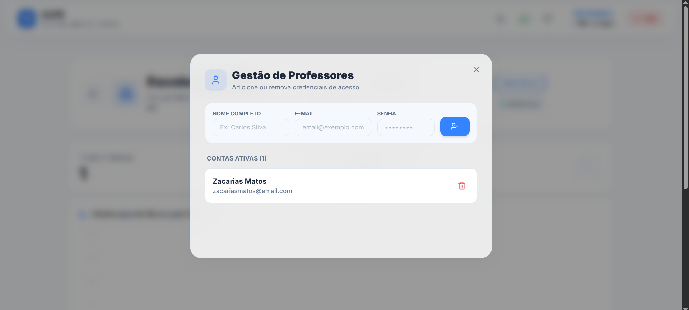
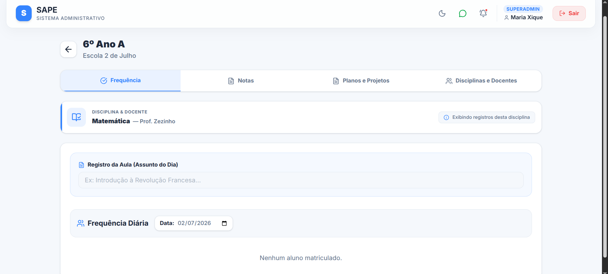
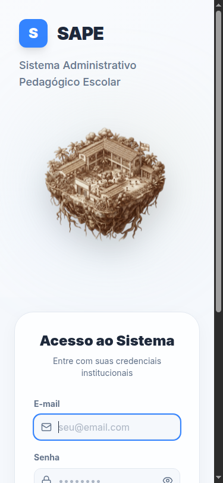

Inteligência de dados, burocracia zero e experiência premium para a educação municipal.
O fim da gestão no escuro. A Inteligência (BI) aplicada à pedagogia.


Disparo instantâneo de comunicados. A Secretaria fala e a mensagem aparece na tela de todas as escolas (Broadcast).
Fim do retrabalho com planilhas. Geração de relatórios para o Censo Escolar e Bolsa Família com 1 clique.
Controle total nas mãos da Direção.




Convidamos a Secretaria para iniciarmos o mapeamento das necessidades locais.
Com nossa tecnologia proprietária, o SAPE não é um pacote fechado, mas sim uma plataforma que se molda à realidade do município.
sapemunicipio.zonaeducacional.org